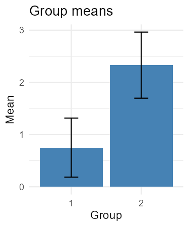
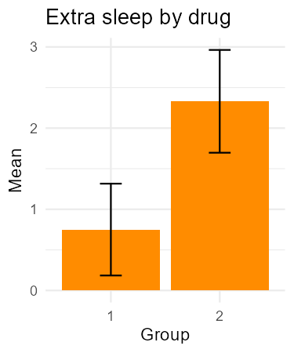

Packaging
Last updated on 2026-10-26 | Edit this page
Overview
Questions
- Why is it useful to organise R code into a package?
- How do I create and develop an R package?
- How can I check and share an R package?
- What do package version numbers tell us?
Objectives
- Create an R package using RStudio or
usethis::create_package(). - Organise reusable functions in the
R/directory and understand the main components of a package. - Declare package dependencies and test functions using
devtools::load_all(). - Document and export functions using
roxygen2. - Install a package locally and run an analysis script that uses its functions.
- Check a package using
devtools::check()and interpret its output. - Describe how packages can be shared through GitHub and how version numbers communicate changes.
R packages
We’ve used several R packages throughout the previous episodes,
including renv, ggplot2, dplyr,
and remotes. Each of these packages provides functionality
beyond what’s available in base R.
For example, to create plots using ggplot2, you can
install and load the package:
R
install.packages("ggplot2")
library(ggplot2)
You now have access to functions for creating plots, such as
ggplot() and geom_point().
When you install a package using install.packages(), R
typically downloads it from CRAN
(the Comprehensive R Archive Network), the default package
repository in most R setups.
CRAN hosts thousands of packages that have been checked against a set of requirements before being made available for others to install.
When you install a package from CRAN, R will also install any required dependencies that aren’t already available on your computer.
Once a package is installed, you can load it into your current R
session using library().
You only need to install a package once for a given R library, but you need to load it again in each new R session where you want to use it.
What is an R package?
An R package is a collection of code, documentation, and sometimes data, organised in a standard way that R understands. This structure makes packages easy to install, load, reuse, and share.
An excellent resource for learning about R package development is R Packages, 2nd edition, a freely available online book by Hadley Wickham and Jennifer Bryan. It covers everything from organising functions and managing dependencies to writing documentation, testing code, and preparing packages for publication.
Why create an R package?
Visit the Introduction chapter of R Packages, 2nd edition, and read the Introduction and Philosophy sections.
As you read, consider the following questions:
- Why might creating an R package be useful, even if you never share it with others?
- How do the standard conventions of R packages save time and make package development easier?
Packages aren’t just for sharing code: Creating an R package allows us to bring related functions together in one place, rather than keeping them scattered across different scripts and projects. This makes our code easier to find, update, and reuse without repeatedly copying and pasting functions. Even if we never share our package with anyone else, organising our code in this way can save time and make our work easier to maintain. If we do decide to share it, others can install and use our functions just like any other R package.
Following conventions saves time and effort: R
packages follow a standard structure, with R code stored in
R/, tests in tests/, and data in
data/. These conventions mean we don’t need to decide how
to organise every new project from scratch. They also allow us to use
tools designed specifically for package development. For example,
usethis helps create and configure package files, while
devtools provides functions for loading, testing, and
checking packages. By automating these tasks, we can spend less time
worrying about the details of package development and more time focusing
on what our package should do.
What does an R package look like?
We’ve seen why creating an R package can be useful. But what does a package actually look like behind the scenes?
Let’s explore the structure of two packages we’ve already encountered.
What do R packages have in common?
Explore the GitHub repositories of two packages that came up in previous episodes:
Take a few minutes to explore the files and folders in both repositories. You don’t need to understand the code itself; we’re interested in how the packages are organised.
- What files and folders do both packages have in common?
- Where are the R functions, tests, and documentation stored?
- What differences can you spot between the two repositories?
- Why do you think packages might need different files or folders?
Files and folders in common
Both packages share several files and folders, including
R/, DESCRIPTION, NAMESPACE,
man/, tests/, and README.md.
Where are the different components stored?
-
R/contains the R functions. -
tests/testthat/contains automated tests. -
man/contains documentation for functions. -
README.mdprovides an overview of the package, including what it does, how to install it, and examples of how to use it. It serves as an introduction to the package and a starting point for its documentation.
Differences between packages
Although both packages follow a common structure, they also have differences.
For example, ggplot2 includes an icons/
folder, which you won’t find in dplyr.
Packages share a standard structure, but they can also include additional files and folders depending on their purpose and development needs.
For example, ggplot2 is a data visualisation package, so
its icons/ folder contains graphical assets that help
illustrate its features. These are useful for ggplot2 but
are not part of the standard R package structure.
Despite serving different purposes, ggplot2 and
dplyr follow a recognisable structure. This is what allows
R to install and load packages in a consistent way.
Creating an R package using RStudio
Now that we’ve explored how existing R packages are organised, let’s create one of our own.
Fortunately, we don’t need to create all the files and folders ourselves.
RStudio can generate the basic package structure automatically.
Creating a folder for our packages
Before creating our first package, let’s create a folder to keep our R packages together.
We’ll call this folder rpackages and use it to store the
two packages we’ll create in this lesson.
- Open the Files pane in RStudio.
- Navigate to your home directory, which is your personal folder on
your computer (for example,
C:\Users\YourNameon Windows or/home/yournameon Linux). - Click New Folder.
- Enter
rpackagesas the folder name and click OK.
You should now have a folder called rpackages in your
home directory.
We’ll create our first package, rstudiopackage, inside
this folder using the RStudio menus.
Later, we’ll create a second package, sleep, using
usethis and develop it using code from our earlier sleep
analysis.
This will allow us to compare the two approaches without overwriting either package.
Creating a package using the RStudio menus
To create a package using RStudio:
- Go to File > New Project….
- Select New Directory.
- Select R Package.
- Enter
rstudiopackageas the package name. - Under Create project as subdirectory of, click
Browse and select the
rpackagesfolder you just created. - You’ll also see some optional settings:
- Create a git repository: Initialises a local Git repository so you can track changes to your package using version control. This doesn’t automatically create a repository on GitHub.
-
Use renv with this project: Sets up
renvto manage package versions used during development, helping make your development environment reproducible. You might recogniserenvfrom the reproducibility episode.
- For this exercise, leave both options unchecked.
- Click Create Project.
RStudio will create a directory called rstudiopackage
inside rpackages and open it as a new project.
Explore your new package
RStudio has created a new project for your package.
You might also notice that an example R script has opened
automatically, containing a function called hello().
Take a few minutes to explore what RStudio has created.
- Look at the Files pane in RStudio. What files and folders have been created?
- Open the
R/folder and find the examplehello.Rscript. What does thehello()function do? - Open the
DESCRIPTIONfile. What information does it contain? Can you identify any placeholder values?
Package structure
Your package should contain a structure similar to this:
rpackages/
└── rstudiopackage/
├── .Rbuildignore
├── .gitignore
├── DESCRIPTION
├── NAMESPACE
├── R/
│ └── hello.R
└── rstudiopackage.RprojThe exact files may vary depending on your RStudio version and the options you selected when creating the project.
Some hidden files, such as .gitignore, might not be
visible in the Files pane.
The hello.R script
Inside R/, you’ll find an example function:
R
# Hello, world!
#
# This is an example function named 'hello'
# which prints 'Hello, world!'.
#
# You can learn more about package authoring with RStudio at:
#
# https://r-pkgs.org
#
# Some useful keyboard shortcuts for package authoring:
#
# Install Package: 'Ctrl + Shift + B'
# Check Package: 'Ctrl + Shift + E'
# Test Package: 'Ctrl + Shift + T'
hello <- function() {
print("Hello, world!")
}
The hello() function simply prints
"Hello, world!" when called.
RStudio includes it as an example of how functions are organised inside an R package.
The DESCRIPTION file
The DESCRIPTION file contains information about your
package, including its name, version, authors, description, and
licence.
RStudio generates this file from a template, so some fields contain example values or placeholders.
Your file will look something like this:
Package: rstudiopackage
Type: Package
Title: What the Package Does (Title Case)
Version: 0.1.0
Authors@R: c(
person(
"Jane", "Doe",
email = "jane@example.com",
role = c("aut", "cre")
)
)
Description: More about what it does (maybe more than one line).
Continuation lines should be indented.
License: What license is it under?
Encoding: UTF-8
LazyData: trueFor example, Title and Description contain
instructions rather than meaningful descriptions of your package.
The author information also contains example details that need to be replaced.
These placeholders help us understand what information is expected, but we’ll need to update them as we develop the package.
Creating an R package using usethis
RStudio uses usethis behind the
scenes when creating a new R package.
RStudio provides a convenient graphical interface for creating
packages, but usethis can also be used directly from the R
console to perform package development tasks.
Using usethis directly gives us access to a wider range
of functions than those available through the RStudio interface. These
functions help automate many additional package development tasks.
For example, it can:
-
Set up testing infrastructure with
use_testthat(), creating the necessary files and folders and updatingDESCRIPTION. -
Add package dependencies with
use_package(), updatingDESCRIPTIONautomatically. -
Create a README with
use_readme_md(), providing a starting point for documenting the package. -
Set up longer tutorials with
use_vignette(), creating a vignette template and updating the necessary configuration. -
Configure automated checks on GitHub with
use_github_action(), creating a GitHub Actions workflow.
These tasks can be completed manually, but usethis
reduces the amount of setup required and helps ensure that the necessary
files and configuration are in place.
Let’s create a second package using usethis and compare
it with the one we created using RStudio.
We’ll call this package sleep and save it inside the
same rpackages folder. We’ll develop it using code from our
earlier sleep analysis.
Creating a package with usethis::create_package()
First, install usethis if you haven’t already:
R
install.packages("usethis")
Before creating the package, we need to make sure that our working
directory is set to the rpackages folder we created
earlier.
You can check your current working directory using:
R
getwd()
If necessary, change your working directory using the RStudio menu:
- Go to Session > Set Working Directory > Choose Directory….
- Navigate to the
rpackagesfolder. - Click Open or Choose, depending on your operating system.
Check that your working directory is now rpackages:
R
getwd()
For example, on Windows you might see:
[1] "C:/Users/YourName/rpackages"Your full path will differ, but it should end in
rpackages.
Once you’re in the correct directory, run:
R
usethis::create_package("sleep")
This creates a new directory called sleep inside
rpackages, containing the basic structure of an R
package.
Depending on your RStudio settings, the new package may also open automatically as an RStudio project.
We should now have two packages stored inside
rpackages:
rpackages/
├── rstudiopackage/
└── sleep/Compare the two packages
We now have two packages: rstudiopackage, created using
RStudio, and sleep, created using usethis.
Take a few minutes to explore their files and folders.
- What files and folders do both packages have in common?
- Open the
R/directory in each package. Does either contain an example function? - Open the
DESCRIPTIONfile in each package. What information does it contain? Can you identify any placeholder values? - What differences can you spot between the two packages?
Package structure
After running usethis::create_package(), your second
package should contain a structure similar to this:
rpackages/
├── rstudiopackage/
│ ├── .Rbuildignore
│ ├── .gitignore
│ ├── DESCRIPTION
│ ├── NAMESPACE
│ ├── R/
│ │ └── hello.R
│ └── rstudiopackage.Rproj
└── sleep/
├── .Rbuildignore
├── .gitignore
├── .Rhistory
├── DESCRIPTION
├── NAMESPACE
├── R/
└── sleep.RprojThe exact files and folders may vary depending on the versions of
RStudio and usethis you’re using.
Both RStudio and usethis create the basic structure of
an R package, including DESCRIPTION,
NAMESPACE, and R/.
One difference is that RStudio typically creates an example
hello.R script inside R/, whereas
usethis::create_package() does not create an example
function by default.
The R/ directory in sleep will therefore
initially be empty, ready for us to add our own functions.
Some files beginning with a dot (.), such as
.gitignore, might not be visible in the Files pane.
The DESCRIPTION file
Both methods create a DESCRIPTION file containing
information about the package, including its name, version, authors,
description, and licence.
The DESCRIPTION file created by usethis,
should look similar to this:
Package: sleep
Title: What the Package Does (One Line, Title Case)
Version: 0.0.0.9000
Authors@R:
person("First", "Last", , "first.last@example.com", role = c("aut", "cre"))
Description: What the package does (one paragraph).
License: `use_mit_license()`, `use_gpl3_license()` or friends to pick a
license
Encoding: UTF-8
Roxygen: list(markdown = TRUE)You may notice some differences compared with the template created using the RStudio menus.
For example, the initial version number is typically
0.0.0.9000 rather than 0.1.0.
Both templates also contain placeholder information that we’ll need to update as we develop our packages.
The structure of an R package
We’ve now created two R packages and explored their structure.
Let’s take a closer look at three core components.
Core components
| Component | Purpose |
|---|---|
DESCRIPTION |
Contains information about the package, such as its name, version, authors, licence, and dependencies. |
R/ |
Contains the R scripts defining the package’s functions. |
NAMESPACE |
Contains instructions about which functions the package makes available and how it uses functions from other packages. |
The DESCRIPTION file
Every R package needs a DESCRIPTION file. We’ve already
seen that RStudio and usethis create it automatically with
placeholder information that we can update.
The R/ directory
Every R package containing R code has an R/ directory.
This directory contains the .R scripts that define the
package’s functions.
We can organise related functions in one or several scripts, and filenames don’t need to match function names.
The NAMESPACE file
Each R package has its own namespace, which keeps its functions and other objects separate from those in other packages. This helps R distinguish between functions with the same name.
The NAMESPACE file contains instructions that control
which functions a package makes available to users and which functions
it imports from other packages.
We’ll explore this in more detail below.
More about namespaces
Two important types of namespace instructions are:
- Exports: Functions that a package makes available to users.
- Imports: Functions that a package brings in from other packages for use in its own code.
We can use :: to call an exported
function from a specific package without first loading it with
library().
For example, we used this when installing obscurepackage
from GitHub:
R
remotes::install_github("stellaprins/obscurepackage")
Here, remotes is the package name, and
install_github() is the function name.
This works because remotes exports
install_github().
When writing our own package, we can also use functions from other
packages. For example, we can call dplyr::summarise()
inside our functions without importing it into our namespace.
Alternatively, we could import summarise() and call it
without the dplyr:: prefix.
We usually don’t edit NAMESPACE manually. Instead,
roxygen2 generates it from special comments in our R
scripts. Later, we’ll use @export to make functions from
our own package available to users.
Why are namespaces useful?
Read Section 10.2.1, Motivation in R Packages, 2nd edition.
Using the examples in this section, explain two reasons why namespaces are useful.
Namespaces therefore help packages behave consistently, even when users define functions with the same names.
Both examples show how namespaces prevent naming
conflicts. The first shows how we can use :: to
choose a function, while the second shows how namespaces ensure that
package functions use the correct functions internally.
1. Choosing the right function when different packages use the same name
Both here and lubridate provide a function
called here(), but these functions do different things.
If we attach both packages using library(), calling
here() uses the version from whichever package was attached
last. This means the same function call could give different results
depending on the order in which we attach the packages.
We can use :: to specify exactly which function we
want:
R
here::here()
lubridate::here()
This works regardless of the order in which the packages were attached.
2. Ensuring package functions use the correct functions internally
Package functions often use other functions internally. Namespaces help them find the correct functions, even when other objects have the same names.
For example, stats::sd() uses var() to
calculate standard deviations. Suppose we define our own function:
R
var <- function(x) -5
Calling var(1:5) now returns -5, but
stats::sd(1:5) still works correctly. This is because
sd() uses var() from the stats
namespace rather than our version.
For more information, see the discussion of namespaces in R Packages, 2nd edition.
Other components
As our package develops, we may add other files and directories.
| Component | Purpose |
|---|---|
man/ |
Help files for package functions, typically generated automatically
by roxygen2. |
tests/ |
Automated tests that check our code works as expected. |
README.md |
An introduction to the package and how to use it. |
vignettes/ |
Longer tutorials showing how to use the package. |
data/ |
Datasets included with the package. |
Not every package needs all these components.
However, a README.md file and automated tests are highly
recommended, even for small packages, to help others understand the
package and ensure it works as expected.
For more information, see the Package structure chapter of R Packages, 2nd edition.
Adding functions to our package
In our earlier sleep analysis, we used the built-in
sleep dataset to calculate summary statistics for each drug
group and plot the results. Let’s organise those steps into three
functions in our sleep package:
-
load_sleep_data(): returns the built-in sleep dataset. -
summarise_data(): calculates summary statistics for a chosen measurement and grouping column. -
plot_summary(): plots group means and standard errors, with options for the bar colour and title.
Open the sleep package project in RStudio by opening
sleep.Rproj inside rpackages/sleep/.
We’ll keep each function in its own script and add documentation
above it using roxygen2
comments, which begin with #'. These comments describe what
a function does, its inputs (@param), its output
(@returns), and examples of how to use it
(@examples).
load_sleep_data()
Run this command in the R console to create and open
R/load_sleep_data.R:
R
usethis::use_r("load_sleep_data")
Download load_sleep_data.R
and save it in the R folder.
R
#' Load the built-in sleep data
#'
#' Get the data used in our sleep analysis.
#'
#' @returns A data frame with columns extra (extra sleep in hours),
#' group (drug group), and ID (participant).
#' @seealso [Official sleep dataset documentation](https://stat.ethz.ch/R-manual/R-devel/library/datasets/html/sleep.html)
load_sleep_data <- function() {
datasets::sleep
}
We use datasets::sleep to refer to the built-in dataset
and distinguish it from our package named sleep. This
function has no inputs, so it doesn’t need an @param
tag.
summarise_data()
Create and open R/summarise_data.R:
R
usethis::use_r("summarise_data")
Download summarise_data.R
and save it in the R folder.
R
#' Summarise a numeric measurement by group
#'
#' Calculate the mean, standard deviation, sample size, and standard error
#' for each group.
#'
#' @param data A data frame.
#' @param value_col Name of the numeric column.
#' @param group_col Name of the grouping column.
#' @returns A data frame with group, mean, sd, n, and se.
summarise_data <- function(data, value_col = "extra", group_col = "group") {
selected_data <- data.frame(
group = data[[group_col]],
value = data[[value_col]]
)
selected_data |>
dplyr::summarise(
mean = mean(value),
sd = stats::sd(value),
n = dplyr::n(),
se = sd / sqrt(n),
.by = "group"
)
}
This function packages up the summary calculation from our earlier
analysis, using the data we pass to it. The column-name arguments let us
choose what to summarise and how to group it. For example,
data[[value_col]] selects the column named by
value_col. The defaults match the sleep dataset;
.by = "group" calculates separate statistics for each
group. The output always uses the same column names, so it can be passed
directly to plot_summary().
plot_summary()
Create and open R/plot_summary.R:
R
usethis::use_r("plot_summary")
Download plot_summary.R
and save it in the R folder.
R
#' Plot group means and standard errors
#'
#' Show means with error bars extending one standard error above and below.
#'
#' @param summary_data A data frame containing group, mean, and se.
#' @param fill Bar colour.
#' @param title Plot title.
#' @returns A ggplot object.
plot_summary <- function(summary_data, fill = "steelblue",
title = "Group means") {
ggplot2::ggplot(
summary_data,
ggplot2::aes(x = factor(group), y = mean)
) +
ggplot2::geom_col(fill = fill) +
ggplot2::geom_errorbar(
ggplot2::aes(ymin = mean - se, ymax = mean + se),
width = 0.2
) +
ggplot2::labs(title = title, x = "Group", y = "Mean") +
ggplot2::theme_minimal()
}
The function expects columns named group,
mean, and se, matching the output of
summarise_data(). Other summary tables can also be used if
they contain these columns.
Save all three scripts, then open the R/ folder in
RStudio’s Files pane. You should see
load_sleep_data.R, summarise_data.R, and
plot_summary.R inside your package.
usethis::use_r() is a convenient way to create and open
them, but you can also create .R scripts manually and save
them in this folder.
Testing functions using devtools
We can use devtools::load_all() to load our package
functions during development without installing the package. If you
haven’t already installed devtools, run
install.packages("devtools") in the R console first.
First, load the package functions:
R
devtools::load_all()
Load the sleep dataset:
R
data <- load_sleep_data()
Calculate the summary statistics:
R
summary_data <- summarise_data(data)
Print the summary table:
R
print(summary_data)
You should see this table in the Console (the number of decimal places displayed may vary):
group mean sd n se
1 1 0.75 1.789010 10 0.5657345
2 2 2.33 2.002249 10 0.6331666There is one row per drug group, with 10 observations in each group. Now plot the summaries:
R
plot_summary(summary_data)
The following plot should appear in RStudio’s Plots pane:

We can change the bar colour and title using the optional arguments:
R
plot_summary(summary_data, fill = "darkorange", title = "Extra sleep by drug")
The Plots pane should now show the same values with orange bars and the title “Extra sleep by drug”:

Generating help pages
Earlier, we used commands such as ?renv to access help
in R. Before generating our package’s documentation, try opening the
help for one of our functions:
R
?summarise_data
R cannot find a help page for this function yet. You may see a message like this:
No documentation for ‘summarise_data’ in specified packages and libraries:
you could try ‘??summarise_data’The suggestion ??summarise_data searches help topic
names, titles, and concepts across installed packages (see help.search()).
It searches existing documentation, not our script comments, so it won’t
find help for our function yet.
Save all three scripts, then run devtools::document() to
generate these files in man/.
R
devtools::document()
The first time you generate the help files, you should see messages similar to these:
ℹ Updating sleep documentation
ℹ Loading sleep
Writing load_sleep_data.Rd
Writing plot_summary.Rd
Writing summarise_data.RdEach Writing message names a help file saved in your
package’s man/ folder.
Reload the package so we can view the help pages during development:
R
devtools::load_all()
You should see a message confirming that the package is loading:
ℹ Loading sleepNow open the help page for load_sleep_data():
R
?load_sleep_data
You should see this message in the Console:
ℹ Rendering development documentation for "load_sleep_data"The documentation opens in RStudio’s Help pane,
showing what the function does, what it returns, and an example of how
to use it. You can open the other functions’ help pages in the same way
using ?summarise_data and ?plot_summary.
When you change the documentation comments, save the script and run
devtools::document() again to update the help files.
Declaring dependencies
Declare the packages used by our functions in
DESCRIPTION:
R
usethis::use_package("datasets")
usethis::use_package("dplyr", min_version = "1.1.0")
usethis::use_package("ggplot2", min_version = "3.0.0")
usethis::use_package("R", type = "Depends", min_version = "4.1.0")
These commands record package dependencies in Imports
and the R requirement in Depends in
DESCRIPTION. The minimum versions ensure the features we
use are available; >= means “this version or newer”.
Open DESCRIPTION in the Files pane. It
should now include:
Depends:
R (>= 4.1.0)
Imports:
datasets,
dplyr (>= 1.1.0),
ggplot2 (>= 3.0.0)Making our functions available
So far, we’ve used devtools::load_all() to try our
functions during development. However, we also want people who install
our package to be able to use them.
Earlier, we learned that a package’s NAMESPACE controls
which functions are available to users. We can export
our three functions by adding #' @export to their
roxygen2 documentation.
For example, update R/load_sleep_data.R to include:
R
#' Load the built-in sleep data
#'
#' Get the data used in our sleep analysis.
#'
#' @returns A data frame with columns extra (extra sleep in hours),
#' group (drug group), and ID (participant).
#' @seealso [Official sleep dataset documentation](https://stat.ethz.ch/R-manual/R-devel/library/datasets/html/sleep.html)
#' @export
load_sleep_data <- function() {
datasets::sleep
}
Add #' @export to the documentation for
summarise_data() and plot_summary() too.
Then regenerate the documentation:
R
devtools::document()
Open the NAMESPACE file in RStudio. It should now
contain:
export(load_sleep_data)
export(plot_summary)
export(summarise_data)These instructions tell R which functions people can use after
installing and loading our package. As we saw earlier,
roxygen2 generates NAMESPACE automatically, so
we don’t need to edit it ourselves.
Adding the analysis script
Installing our package gives others access to its functions, but doesn’t show how we used them to produce our results. For that, we also need an analysis script.
In the sleep project, create a folder called
scripts/.
Download sleep_analysis.R
and save it in the scripts folder.
R
# Sleep analysis
#
# Load the built-in sleep dataset, calculate and plot summary statistics
#
# Uses functions from the sleep package.
library(sleep)
data <- load_sleep_data()
summary_data <- summarise_data(data)
print(summary_data)
plot_summary(
summary_data,
fill = "mediumpurple",
title = "Extra Sleep by Drug"
)
Our project now has two places for R code:
-
R/contains reusable package functions. -
scripts/contains scripts that use those functions to perform an analysis.
We should commit our analysis scripts to Git alongside the package code. When we push these changes to GitHub, colleagues can access the scripts and see how our results were produced.
These scripts aren’t needed to install and use the package, so we can exclude them from the files distributed with the package:
R
usethis::use_build_ignore("scripts")
Running the analysis script
Now that we’ve exported our functions, we can install the package
locally from the sleep project:
R
devtools::install()
Then run the analysis script:
R
source("scripts/sleep_analysis.R")
The script uses library(sleep) to load our installed
package. It should print the summary statistics and display the plot in
RStudio’s Plots pane.
Although scripts/ is excluded from the installed
package, it remains in our project and can be shared through GitHub.
Checking our package
We’ve now added functions to our sleep package,
generated their help pages, declared dependencies, and made the
functions available to users.
We also need to check that the package follows R’s package development requirements.
We can do this using devtools::check(), which checks our
package’s code, documentation, dependencies, and structure.
Run the following command in the R console:
R
devtools::check()
This runs a series of checks and reports three types of messages:
- Errors: Problems that must be fixed.
- Warnings: Potential problems that should be investigated.
- Notes: Issues worth reviewing, even if the package works correctly.
Check your package
Look at the output from devtools::check().
Your tasks:
- How many errors, warnings, and notes are reported?
- Look at the NOTES in the output. Which functions and variables are mentioned? Why might R be reporting them?
The exact results may vary depending on your package and development environment.
You might see NOTES such as:
plot_summary: no visible binding for global variable 'group'
plot_summary: no visible binding for global variable 'se'
summarise_data: no visible binding for global variable 'value'
summarise_data: no visible binding for global variable 'sd'
summarise_data: no visible binding for global variable 'n'
Undefined global functions or variables:
group n sd se value
Consider adding
importFrom("stats", "sd")
to your NAMESPACE file.These NOTES refer to column names used in our
summarise_data() and plot_summary()
functions.
They occur because dplyr and ggplot2
recognise column names such as group, value, and se, but R’s package
checker does not always recognise them.
The suggestion to import sd() relates to
namespaces, which we explored earlier. However, our
function already uses stats::sd() to specify which package
provides the function, so we don’t need to import it separately.
These NOTES do not necessarily mean our functions are incorrect.
It’s good practice to run devtools::check() regularly as
we develop our package, particularly after making changes to its
functions, documentation, or dependencies.
Ideally, we should aim to resolve all errors, warnings, and notes before publishing a package, especially when submitting it to CRAN.
For more information, see:
- R Packages, 2nd edition – Checking, which explains package checks and how to interpret their results.
- Using dplyr in packages, which explains why NOTES about column names occur and how to address them.
Resolving package check NOTES (extra)
In the previous challenge, we saw that devtools::check()
reported several undefined variables in our
summarise_data() and plot_summary()
functions.
These NOTES occur because dplyr and ggplot2
allow us to refer directly to data-frame columns by name, but R’s
package checker cannot always recognise these references.
We can resolve them using .data$column, which explicitly
identifies a column in the data being processed.
Your tasks:
- Update
summarise_data()andplot_summary()to use.data$columnwhen referring to data-frame columns. - Add
rlangas a package dependency and import.datainto the package namespace. - Regenerate the documentation and run
devtools::check()again. - How many errors, warnings, and notes are now reported?
1. Update summarise_data()
Open R/summarise_data.R and replace its contents
with:
R
#' Summarise a numeric measurement by group
#'
#' Calculate the mean, standard deviation, sample size, and standard error
#' for each group.
#'
#' @param data A data frame.
#' @param value_col Name of the numeric column.
#' @param group_col Name of the grouping column.
#' @returns A data frame with group, mean, sd, n, and se.
#' @importFrom rlang .data
#' @export
summarise_data <- function(data, value_col = "extra", group_col = "group") {
selected_data <- data.frame(
group = data[[group_col]],
value = data[[value_col]]
)
selected_data |>
dplyr::summarise(
mean = mean(.data$value),
sd = stats::sd(.data$value),
n = dplyr::n(),
se = .data$sd / sqrt(.data$n),
.by = "group"
)
}
Previously, we wrote mean(value). Although
dplyr understands that value refers to a
column, R’s package checker may treat it as an undefined variable.
Writing mean(.data$value) makes this explicit: we’re
using the value column of the data being processed.
Similarly, .data$sd and .data$n refer to
columns created earlier in the same summarise() call.
2. Update plot_summary()
Open R/plot_summary.R and replace its contents with:
R
#' Plot group means and standard errors
#'
#' Show means with error bars extending one standard error above and below.
#'
#' @param summary_data A data frame containing group, mean, and se.
#' @param fill Bar colour.
#' @param title Plot title.
#' @returns A ggplot object.
#' @export
plot_summary <- function(summary_data, fill = "steelblue",
title = "Group means") {
ggplot2::ggplot(
summary_data,
ggplot2::aes(x = factor(.data$group), y = .data$mean)
) +
ggplot2::geom_col(fill = fill) +
ggplot2::geom_errorbar(
ggplot2::aes(
ymin = .data$mean - .data$se,
ymax = .data$mean + .data$se
),
width = 0.2
) +
ggplot2::labs(title = title, x = "Group", y = "Mean") +
ggplot2::theme_minimal()
}
Here, .data$group, .data$mean, and
.data$se explicitly refer to columns in
summary_data.
3. Declare the dependency
The .data pronoun is provided by the rlang
package.
We’ve already added #' @importFrom rlang .data above
summarise_data(). This tells roxygen2 to
import .data into our package namespace.
However, as we learned earlier, importing an object from another package also requires us to declare that package as a dependency.
Run:
R
usethis::use_package("rlang", min_version = "1.0.0")
This adds rlang to the Imports field in
DESCRIPTION, with a minimum required version:
rlang (>= 1.0.0)Remember that DESCRIPTION declares which packages our
package needs, while NAMESPACE specifies which objects we
import from them.
4. Regenerate the documentation and check the package
Save your changes and run:
R
devtools::document()
devtools::check()
Open NAMESPACE. Alongside the existing exports, it
should now contain:
importFrom(rlang,.data)If there are no other issues, the check should report:
0 errors ✔ | 0 warnings ✔ | 0 notes ✔Why does this work?
Using .data$column makes it explicit that we’re
referring to a data-frame column rather than a separate variable.
This also connects to what we learned earlier about namespaces:
-
stats::sd()identifies thesd()function from thestatspackage. -
.data$sdidentifies a column calledsdin the data being processed.
The original check output suggested importing sd() from
stats. However, our function already uses
stats::sd(), so this additional import is unnecessary. The
NOTE appeared because sd was also being used as a column
name.
Finally, DESCRIPTION and NAMESPACE work
together: DESCRIPTION declares that our package depends on
rlang, while NAMESPACE records that we import
.data from it.
By making our column references explicit and declaring the dependency correctly, we resolve the NOTES without changing what our functions do.
Preparing our package for sharing
Before sharing our package, we should make sure it explains what it does, who created it, and how others can use it.
Updating DESCRIPTION
We’ve already used DESCRIPTION to declare our
dependencies. Now let’s replace its placeholder information with a
meaningful title, description, and author details.
For example, the main fields could look like this:
Package: sleep
Title: Summarise and Visualise Grouped Measurements
Version: 0.0.0.9000
Authors@R:
person("First", "Last", , "first.last@example.com", role = c("aut", "cre"))
Description: Summarise numeric measurements by group using means,
standard deviations, sample sizes, and standard errors.
Visualise group means with standard-error bars.
Includes a helper for loading the built-in sleep dataset.Replace the example author details with your own. Keep the dependency
and other configuration fields already present in your
DESCRIPTION file.
We should also choose a licence so others know how they are allowed to use and share our code. For example, to use the MIT licence, run:
R
usethis::use_mit_license()
This creates the licence files and updates
DESCRIPTION.
Adding a README
A README introduces a package and helps others get started.
Create one for our package:
R
usethis::use_readme_md()
This creates a template that we can replace with a short introduction, installation instructions, and an example.
For example:
MARKDOWN
# sleep
An R package for summarising grouped data and plotting means with standard-error bars.
## Installation
**For users:** Install the package from GitHub:
```r
install.packages("remotes")
remotes::install_github("yourusername/sleep")
```
**For developers:** Clone the repository:
```bash
git clone https://github.com/yourusername/sleep.git
```
Open `sleep.Rproj` in RStudio. Then load the package during development:
```r
install.packages("devtools")
devtools::load_all()
```
To install the package locally, use `devtools::install()`.
## License
MIT License.Replace yourusername with your GitHub username. The
installation command will work once we’ve uploaded our package to that
repository.
Publishing our package
Like ggplot2 and dplyr, we can share our
sleep package on GitHub.
GitLab is a similar alternative for
hosting and sharing code.
If you have a GitHub account, open the
sleep project in RStudio and run:
R
usethis::use_git()
usethis::use_github()
The first command sets up Git to track changes, while the second helps publish our package on GitHub.
Follow the instructions in the R console to configure authentication and commit your changes.
Once published, others can install the package, just as we installed
obscurepackage earlier:
R
remotes::install_github("yourusername/sleep")
Replace yourusername with your GitHub username.
They can then load the package and use our exported functions:
R
library(sleep)
data <- load_sleep_data()
summary_data <- summarise_data(data)
print(summary_data)
plot_summary(summary_data)
Alternatively, the repository can be cloned to get a local copy of the package’s source code, including its functions, documentation, and analysis scripts.
This can be done using git, by running:
This creates a folder called sleep containing the
project files. They can then open sleep.Rproj in RStudio to
explore the code, reproduce the analysis, or contribute to the
package.
Keeping track of versions
We’ve now turned our sleep analysis into a reusable package that others can install, understand and develop further!
But what happens when we update our package? Remember how a newer
version of obscurepackage changed the results in the
environments episode? To keep analyses reproducible, it’s important to
know which package version was used.
Our package started with:
Version: 0.0.0.9000The .9000 indicates a development version. When we’re
ready for our first release, we might change this to
0.1.0.
As we continue developing the package, we can use version numbers to
communicate what has changed. A common convention is semantic versioning, which follows the
format MAJOR.MINOR.PATCH:
| Change | Example |
|---|---|
| Bug fix (patch) |
0.1.0 -> 0.1.1
|
| New feature (minor) |
1.1.0 -> 1.2.0
|
| Breaking change (major) |
1.0.0 -> 2.0.0
|
We can also use GitHub
Releases to mark a specific version with a tag, such as
v0.1.0.
Others can then install that version:
R
remotes::install_github("yourusername/sleep@v0.1.0")
Remember that changing Version in
DESCRIPTION does not automatically create a GitHub tag or
release.
For reproducibility, record the package version or Git commit used in
an analysis, alongside the project’s renv.lock. This helps
others recreate the analysis even as the package continues to
evolve.
- R packages organise reusable code, documentation, and data in a standard structure.
-
RStudioandusethiscan create package structures automatically. - Store functions in
R/and declare dependencies inDESCRIPTION. - Use
devtools::load_all()to test functions during development. - Document and export functions using
roxygen2, and generate help pages withdevtools::document(). - Use
devtools::check()to identify issues before sharing a package. - Share packages through platforms such as GitHub and use version numbers to track changes.